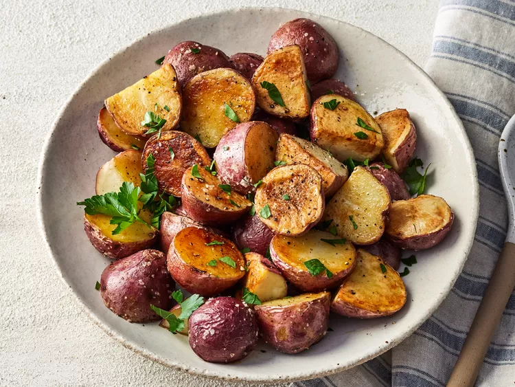

Home
Roasted Red Potatoes

Roasted red potatoes at their best — plain and simple. Red potatoes are tossed with olive oil, salt, and pepper, then roasted to perfection.
Ingredients
- 2 pounds red potatoes
- 1/4 cup olive oil
- 1 teaspoon salt
- 1/2 teaspoon black pepper
- 1 teaspoon garlic powder
- 1 teaspoon dried rosemary
- 1 teaspoon dried thyme
- 1 teaspoon paprika
- 1 teaspoon onion powder
- 1 teaspoon dried parsley
- 1 teaspoon dried oregano
Instructions
- Preheat oven to 425°F (220°C).
- Wash and cut the potatoes into quarters.
- In a large bowl, combine the potatoes, olive oil, salt, pepper, and spices. Toss to coat.
- Spread the potatoes in a single layer on a baking sheet.
- Roast for 25-30 minutes, or until golden brown and tender.
- Serve hot as a side dish.